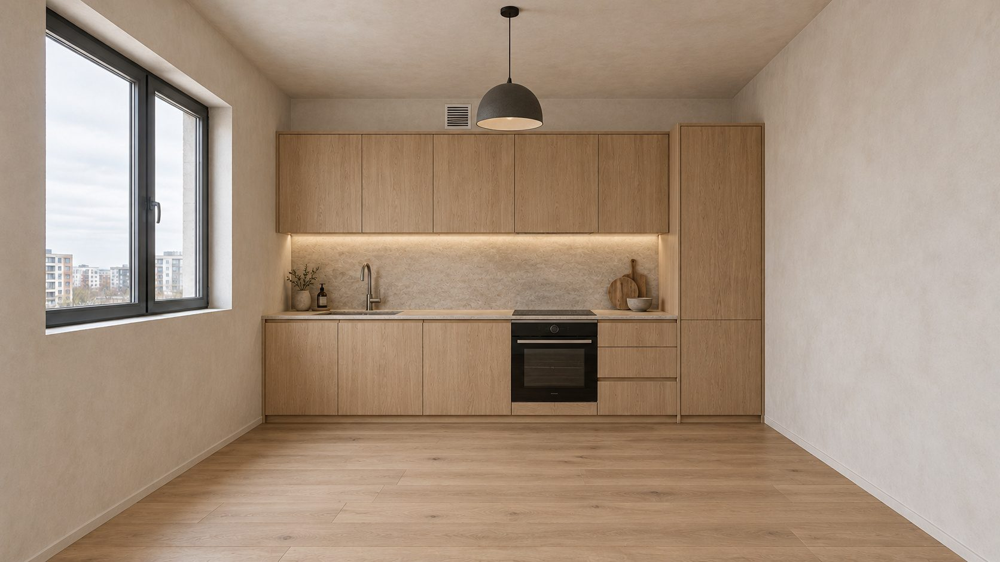
Ремонт без«если быя знал»
Всё, о чём жалеют после ремонта, — здесь до его начала. С чего начать, какой стиль подходит вашей семье, какие цвета дружат и где ремонт чаще всего приходится переделывать.
Сначала жизнь, потом розетки — и только потом цвет стен
Большинство переделок происходит из-за неправильного порядка: плитку выбрали раньше мебели, ламинат положили на сырую стяжку, кондиционер вспомнили после покраски. Справочник ведёт по шагам — так, как работает хороший дизайнер.
Детская для девочки 10 лет, спальня для родителей за 60 или студия 30 м² — план, розетки и смета за минуту
Введите размеры, окна и дверь, выберите цвета и что должно быть в комнате. Получите расстановку мебели, точки электрики с высотами, расход материалов и примерную стоимость в рублях.
От бетона до уюта — без переделок
Одиннадцать разделов проходят весь ремонт по порядку. Регистрация не нужна — отметки в чек-листах и ответы сохраняются в вашем браузере.
Какую комнату меняем?
Нажмите на комнату — откроются розетки, высоты и свет именно для неё.
То, о чём вспоминают слишком поздно
Каждая из этих мелочей — причина вскрыть стену или переложить плитку. Решаются они до штукатурки и почти ничего не стоят, если о них помнить.
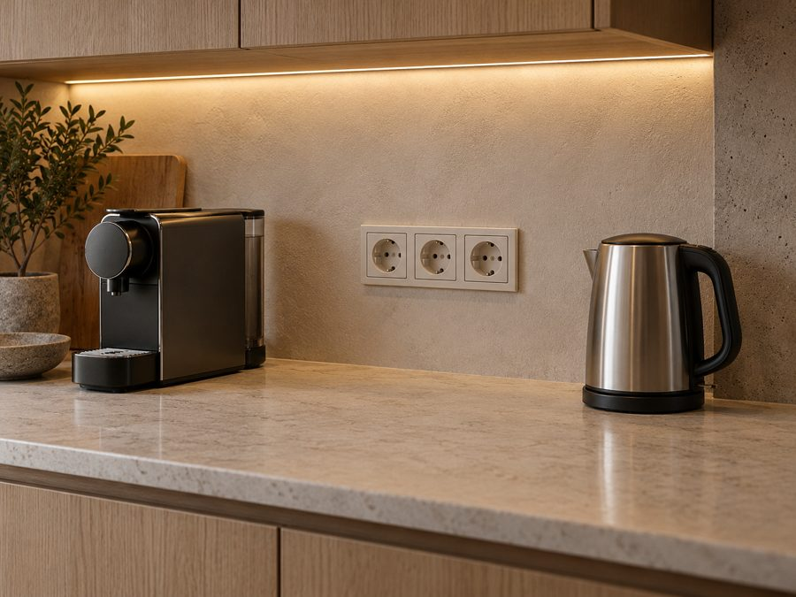
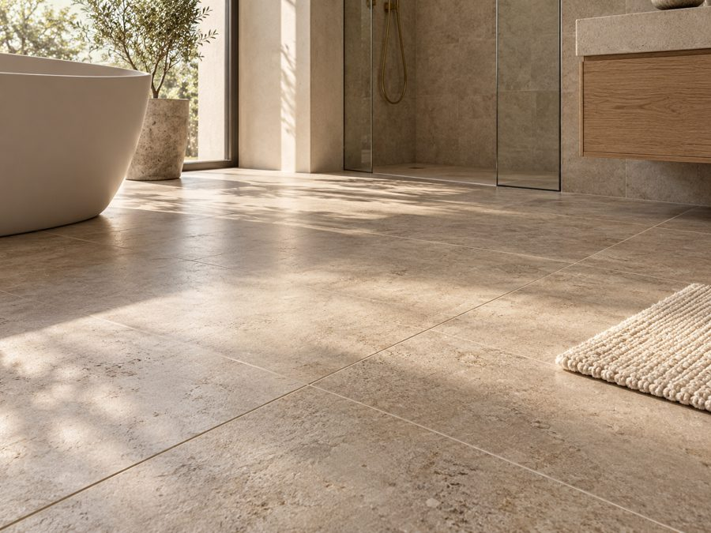
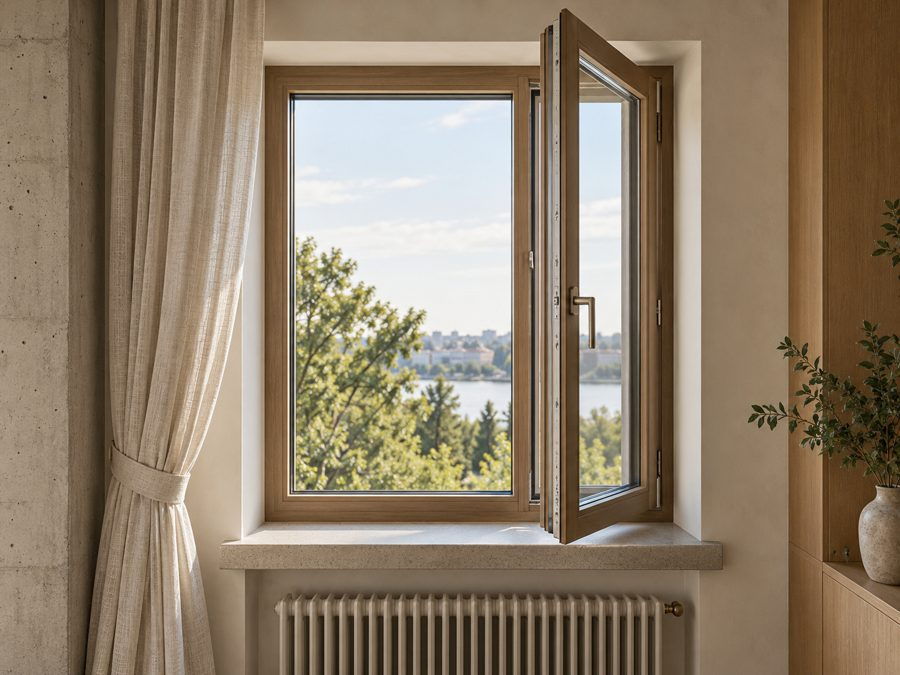
Цвета, которые дружат
Двадцать гамм вживую: штукатурка, дерево, ткани и металл в одной палитре. Нажмите на гамму — она разложится по всей квартире.
Фактуры, которые хочется потрогать
46 материалов для стен, пола, мебели и текстиля — где их использовать и в каких стилях они работают.
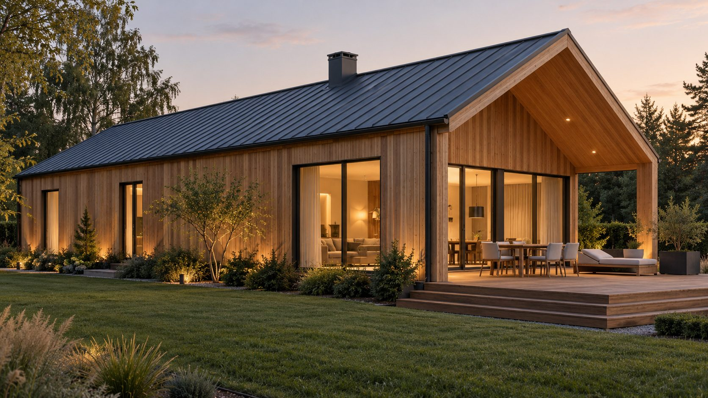
От фасада до розетки
В доме сначала решают то, чего нет в квартире: где котельная и как идёт отопление, откуда вода и куда канализация, какая кровля и утепление. Фасад и отделку — потом. Порядок работ тот же, что в «Этапах», плюс сезонность: кровлю и фасад — в тёплое время, отделку — когда дом прогрет и просушен.
Ремонт, о котором не жалеют
Палитра, материалы, советы по возрасту и список того, на чём не стоит экономить именно вам.
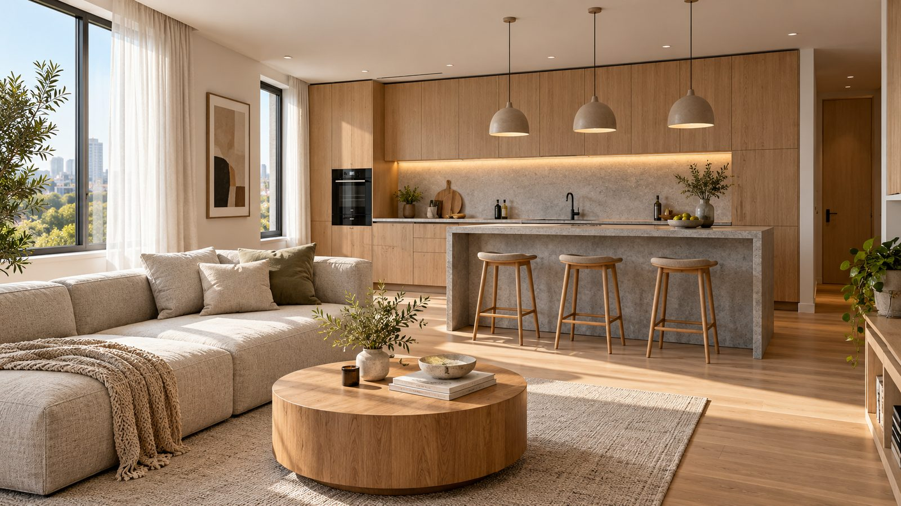
С чего начать
Порядок работ и бюджет зависят от того, в каком состоянии вы получили квартиру. Выберите своё — и посмотрите, что проверить первым делом.
Сначала думаем. Потом штробим.
Порядок решений важнее бюджета: всё, что решено до перфоратора, почти ничего не стоит.
Для любого состояния
Три решения до первого удара перфоратора
Кто где спит, работает, готовит, где хранятся велосипед, коляска, пылесос и сезонные вещи. Из этого получается планировка, а из планировки — розетки и свет.
Отложите 15–20% сверх сметы на непредвиденное. Без резерва ремонт чаще всего останавливается между черновыми и чистовыми работами.
Хотя бы простой проект: план мебели, электрики, света и сантехники. С ним мастера считают точнее, а вы не решаете на ходу.
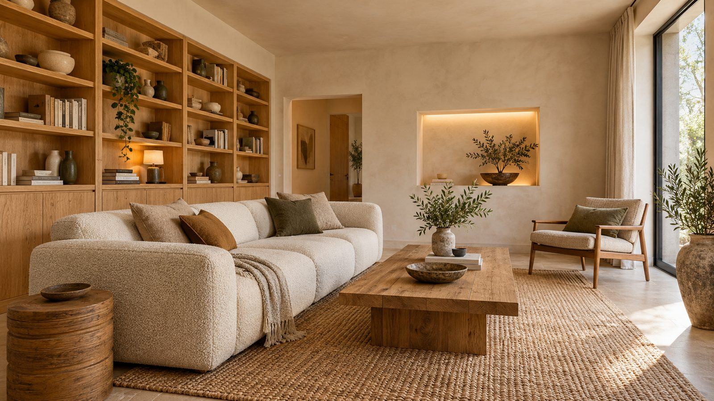
Этапы от А до Я
Ремонт переделывают, когда этапы идут не в том порядке. Отмечайте сделанное — отметки останутся в этом браузере.
Знать заранее дешевле, чем переделывать.
Пятнадцать этапов в правильном порядке — отмечайте и не пропускайте.
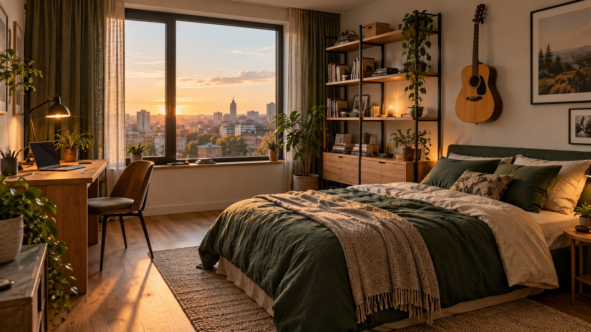
Подбор стиля
Сначала — квартира и люди: сколько комнат и метров, кто живёт и сколько кому лет. Потом — вкус. Результат пересчитывается сразу: кого куда поселить, сколько нужно шкафов, какой стиль и какие материалы подойдут именно вашей семье.
Дом, продуманный до последней розетки.
Стиль, комнаты и материалы — под ваши метры, вашу семью и возраст каждого.
1Квартира
2Кто живёт
3Образ жизни
Отметьте всё, что про вас
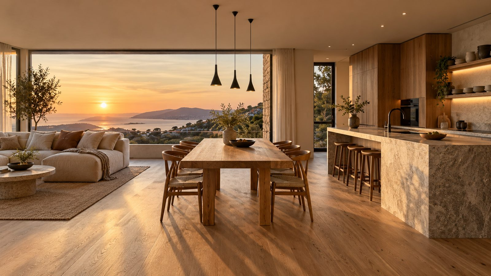
Что с чем сочетается
Выберите палитру — комната перекрасится. У каждой палитры пять ролей: стены, пол и крупная мебель, текстиль, акцент и металл.
Ошибайтесь на экране, а не на стенах.
Примерьте палитру здесь — перекрашивать комнату дороже, чем нажать на кнопку.
20 цветовых гамм
Гаммы в материалах
Каждая гамма — пять ролей цвета на реальных фактурах. Выберите гамму — откроются коды, а ниже её можно разложить по квартире.
Цветовая карта квартиры
Одна палитра — на всю квартиру
Как цвет переходит из комнаты в комнату
- Общие зоны — прихожая, коридор, гостиная — в одной базе: квартира кажется больше.
- В приватных комнатах база та же, но глубже или теплее.
- Пол — один во всех комнатах, без порогов; керамогранит — только в мокрых зонах и у входа.
- Двери, плинтусы, ручки и розетки — одинаковые во всей квартире.
- Акцент каждой комнаты — из одной палитры, чтобы из двери в дверь не было «скачков».
Примерка палитры на комнате
Правила, которые работают всегда
Около 60% площади — основной спокойный цвет (стены), 30% — второй (пол, крупная мебель, шторы), 10% — акцент. Акцент повторите 2–3 раза в комнате, тогда он выглядит задуманным.
Окна на север: свет холодный — выбирайте тёплые оттенки. На юг: света много — можно прохладные и приглушённые. На запад и восток проверяйте краску утром и вечером.
Покрасьте лист А3 или выкрас 50×50 см, повесьте на разные стены и смотрите 2–3 дня. На большой стене цвет всегда темнее и насыщеннее, чем в каталоге.
Два «бежевых» могут спорить: один уходит в розовый, другой в зелёный. Сравнивайте образцы на белом листе. Подбирайте краску к дереву и плитке, а не наоборот.
Стены, потолок и двери в одном светлом тоне раздвигают границы. Тёмный цвет допустим, если покрасить всё целиком — получится уютная «шкатулка».
Лампы 2700–3000 K делают палитру теплее, 4000 K — холоднее. Выбирайте краску при тех лампах, что будут дома, и одну температуру на комнату.
Дерево, камень или плитка и один металл. Если дерево разное, пусть отличается заметно, а не «почти совпадает».
С возрастом глаз хуже различает близкие и тёмные тона. Старшему поколению нужен контраст: края ступеней, столешниц, выключатели и двери должны читаться на фоне стен.
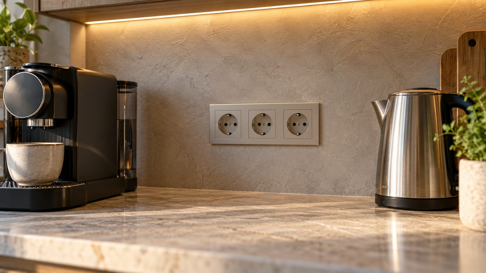
Розетки и свет
Самая частая переделка — электрика: розетка за шкафом, у кровати нет выключателя, на кухне удлинитель. Здесь — точки и высоты для каждой комнаты.
Розетка за шкафом — это не судьба.
Решите точки и высоты по мебели до штукатурки — и удлинители не понадобятся.
Для всей квартиры
Правила, которые экономят переделку
- Сначала расставьте мебель на плане — только потом рисуйте розетки.
- Отдельные линии от щита: варочная панель, духовка, посудомойка, стиральная машина, кондиционеры, тёплый пол, бойлер.
- Розеточные группы, ванная и кухня — через УЗО или дифавтоматы.
- В щите оставьте запас 20–30% свободных мест.
- Выключатели на высоте около 900 мм удобны и детям, и пожилым.
- В длинных коридорах и спальнях — проходные выключатели с двух концов.
- Перед штукатуркой снимите все стены с трассами на фото и видео рядом с рулеткой.
- Попросите схему щита с подписями каждой линии.
- Свет в три слоя: общий, рабочий, акцентный. Лампы 2700–3000 K в жилых комнатах.
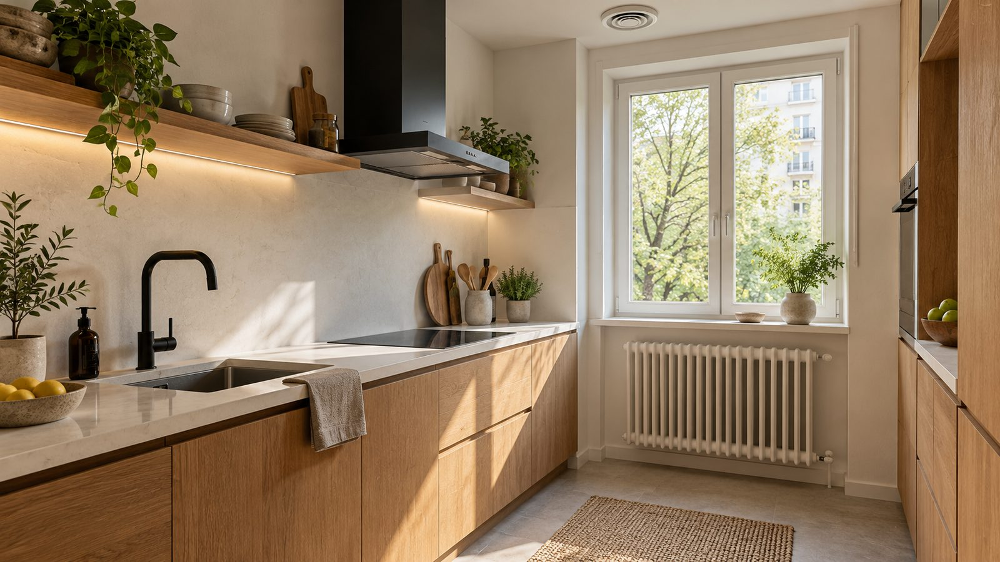
Ошибки и экономия
Дорого обходится не материал, а переделка: снять плитку, вскрыть стену, заменить пол. Ниже — ошибки, после которых переделывают чаще всего.
Ваш ремонт уже кто-то испортил. Не повторяйте.
Чужие ошибки собраны в одном месте, чтобы вы не совершили свои.
Где экономить можно, а где нельзя
Можно экономить
- Декор и текстиль. Шторы, подушки, ковры легко поменять через пару лет.
- Корпуса мебели. Стандартные корпуса и фасады на заказ — выглядят дорого, стоят меньше.
- Плитка стандартных размеров. Меньше подрезки и отходов.
- Светильники. Простой корпус с хорошей лампой лучше дорогого корпуса с плохим светом.
- Время. Окна, двери, кухню и сантехнику заказывайте заранее — срочность дороже.
- Хорошая предчистовая. Не переделывайте то, что сделано ровно и правильно.
Нельзя экономить
- Электрика. Кабель, щит, защита — это безопасность, и это спрятано в стенах.
- Гидроизоляция. Ошибка обходится ремонтом у соседей снизу.
- Трубы, краны, фитинги. Особенно всё скрытое.
- Вентиляция. Без неё — запотевшие окна, плесень и запахи.
- Основание. Ровные стены и правильная стяжка — от них зависит всё сверху.
- Окна и звукоизоляция. Холод и шум потом не исправить без демонтажа.
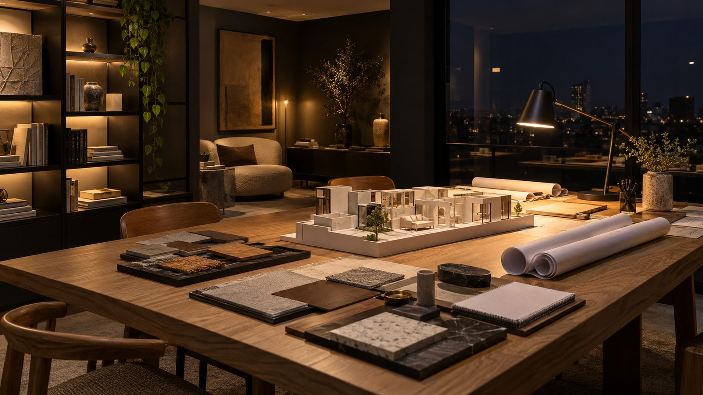
Тренды и как их брать
Ремонт живёт 10–15 лет, тренд — два-три года. Тренд — в то, что легко заменить (краска, текстиль, светильник), база — спокойная и долгая.
Один раз и навсегда.
Тренд — в то, что легко заменить. База — на десять лет вперёд.
Цвета года 2026
У производителей краски. Оттенки на экране приблизительные — сверяйтесь с выкрасом.
Тёплая светлая база
Молочный, тёплый серый, песочный на стенах, полу и крупной мебели вместо холодного серого и чисто белого.
Как брать: белый с тёплым подтоном, но без желтизны — проверяйте выкрас рядом с полом и дверями.
Шоколад, бордо, баклажан
Глубокие тёплые тона и сине-зелёный вместо ярких акцентов.
Как брать: одна стена, кресло, шторы или кабинет целиком. Не в кухонные фасады и не в плитку — их не перекрасишь.
Тактильность
Лён, шерсть, букле, матовые поверхности, дерево с открытой текстурой, известковая штукатурка.
Как брать: натуральное — в зонах касания (столешница, ручки, текстиль), качественные имитации — там, где нагрузка и влага.
Свет в три слоя
Общий, рабочий и акцентный свет на отдельных выключателях, диммеры, тёплые 2700–3000 K.
Как брать: закладывается на этапе черновой электрики. Позже — только накладные светильники.
Встроенное до потолка
Шкафы в цвет стен, мебель с хранением внутри.
Как брать: ниши и розетки внутри шкафов (пылесос, роутер, зарядки) — до штукатурки.
Округлое точечно
Скруглённый диван, стол, зеркало или светильник на фоне прямой архитектуры.
Как брать: одна-две округлые вещи в комнате.
Акустика
Ковры, шторы, мягкая мебель, акустические панели.
Как брать: в минималистичном интерьере сразу закладывайте текстиль, иначе будет эхо.
Вещь с историей
Винтажный комод, ручная керамика, семейная мебель на нейтральном фоне.
Как брать: одна-две такие вещи на комнату — и интерьер становится вашим.
Источники: Livingetc — цвета года 2026 · Т—Ж — тренды дизайна интерьера 2026 · ArchDaily — цвета года 2026
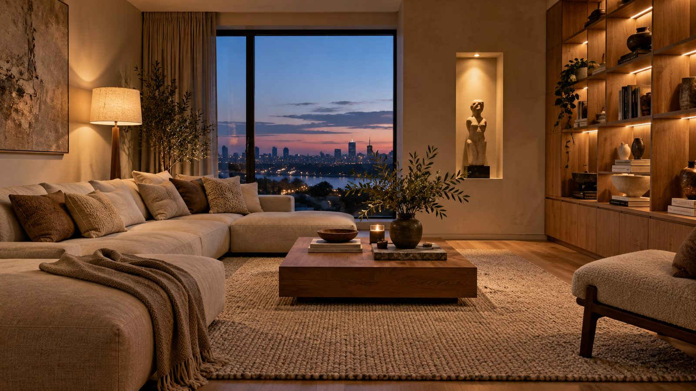
Каталог стилей
От светлого скандинавского до роскошного ар-деко, от прованса до яркого колор-блока. У каждого стиля — палитра с ролями цвета, фактуры, мебель, свет и честное «как не перегнуть».
Стиль — это не картинка. Это то, как вы живёте.
Выбирайте глазами, проверяйте жизнью: сколько у вас вещей, детей, света и времени на уборку.
Библиотека материалов · 46
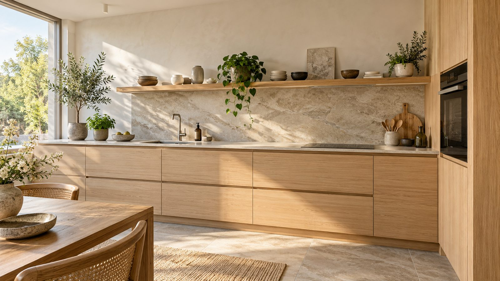
Калькулятор материалов
Введите размеры комнаты — получите краску, грунт, обои, пол и плинтус с правильным запасом. Купить мало — значит докупать другую партию другого оттенка. Купить много — выбросить деньги.
Купите сколько нужно. Не больше и не меньше.
Плитку, обои и ламинат берите из одной партии: у разных партий может отличаться оттенок.
Сколько брать в запас
- Ламинат, доска: 5–7% при прямой укладке, 10–15% по диагонали и ёлочкой.
- Плитка: 10% прямо, 15% по диагонали и при крупном формате; 1 коробку оставьте на будущие ремонты.
- Обои: 1 рулон сверху; с крупным рисунком — по раппорту, ещё 1–2.
- Краска: 10% сверх расчёта и небольшой остаток для подкраски — запишите номер колеровки.
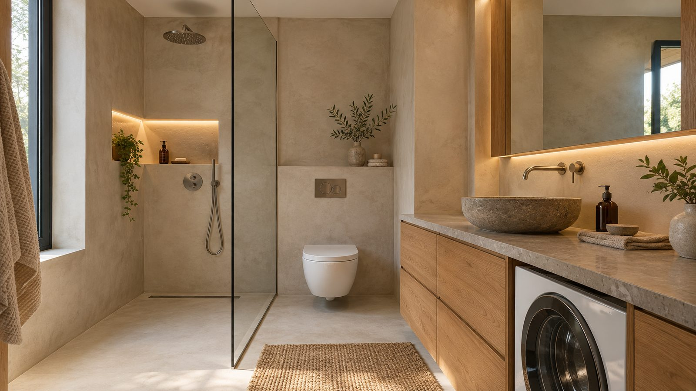
Мастера и приёмка
Хорошая бригада и правильная приёмка спасают ремонт больше, чем дорогие материалы. Как выбрать, что прописать в договоре и как принимать каждый вид работ.
Принимайте работу, пока её не закрыли.
Проводку, трубы и гидроизоляцию проверяют до штукатурки и плитки. Потом их уже не видно.
Как выбрать
- Посмотрите вживую 1–2 объекта бригады — готовый и в процессе.
- Спросите контакты прошлых заказчиков и позвоните им.
- Сравните 2–3 сметы по одинаковому списку работ, а не по итоговой сумме.
- Хороший мастер задаёт вопросы про проект, мебель и технику — до того, как назвать цену.
Что в договоре
- Смета: каждый вид работ, объём и цена за единицу.
- Сроки по этапам и что будет при задержке.
- Кто закупает черновые материалы и как их принимают.
- Гарантия на работы и как устраняют недостатки.
- Порядок приёмки скрытых работ: фото, видео, акт.
Как платить
- Поэтапно: оплата этапа — после его приёмки.
- Аванс — на материалы и первый этап, а не за весь ремонт.
- Дополнительные работы — только письменно, с ценой до начала.
- Храните чеки, акты и переписку.
Приёмка по видам работ
01Электрика (до штукатурки)Проверяет: вы и электрик
- Точки совпадают с проектом: сверьте каждую розетку по плану и высоте.
- Трассы идут вертикально и горизонтально, а не по диагонали.
- Фото и видео каждой стены с рулеткой до закрытия.
- В щите — подписи каждой линии, УЗО срабатывает по кнопке «Тест».
02Сантехника (до закрытия стен)Проверяет: вы и сантехник
- Опрессовка — проверка системы давлением — при вас, до закрытия.
- Выводы на нужной высоте под конкретную сантехнику.
- Канализация с уклоном, без провисаний.
- Краны и счётчики доступны через люк.
03Стены и штукатуркаИнструмент: правило 2 м, фонарь
- Приложите правило в разных направлениях — просветы видны сразу.
- Посветите фонарём вдоль стены: боковой свет показывает волны.
- Углы под 90° — проверьте угольником, особенно там, где встанет мебель.
- Нет трещин и отслоений, откосы ровные.
04Гидроизоляция и плиткаТест водой, простукивание
- Гидроизоляцию проверяют водой до плитки — сутки без протечек.
- Простучите плитку: глухой звук значит пустоту под ней.
- Швы одинаковой ширины, рисунок раскладки — по развёртке.
- В душе вода уходит в трап, а не стоит лужей.
05Полы и двериГлаз, ухо, уровень
- Пройдите по всему полу: скрип и прогибы — повод разбираться.
- Вдоль стен есть компенсационный зазор, закрытый плинтусом.
- Двери закрываются сами не распахиваясь, зазоры ровные по периметру.
06Чистовая и финалДокументы и остатки
- Проверьте каждую розетку и выключатель, каждый смеситель под нагрузкой.
- Под мойками и сифонами — сухо через сутки.
- Заберите остатки плитки, краски с номером колеровки, гарантии и инструкции.
- Сохраните фото скрытых работ в облаке.
Тревожные сигналы
- «Договор не нужен, я так работаю».
- Просят всю сумму вперёд.
- Цена названа без замеров и проекта.
- Против фото скрытых работ.
- «Гидроизоляция не нужна, плитка и так не пропустит».
- Начинают чистовую до высыхания стяжки.
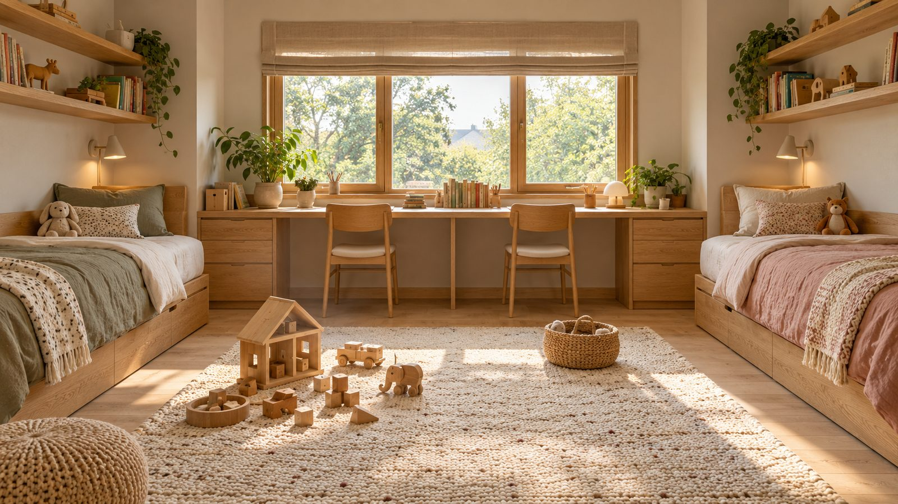
Ваша комната на плане
Задайте размеры, окна и дверь, для кого комната и что в ней должно быть. Конструктор расставит мебель, розетки, выключатели и свет с высотами, посчитает материалы и примерную смету в рублях.
Увидеть комнату до ремонта — дешевле, чем переделать после.
План — черновик для разговора с дизайнером и бригадой. Проверьте размеры рулеткой и привяжите точки к своей мебели.
Ремонт своими руками
Что семья может сделать сама и сэкономить на работе, а что лучше доверить мастеру. Пошагово: полы, обои, покраска, плинтус — с инструментами, материалами и частыми ошибками.
Сэкономить можно на работе. Нельзя — на подготовке.
Ровное основание, сухая стяжка и грунт решают больше, чем дорогой материал.
Что можно сделать самим
С чего начать
- Решите, что делаете сами, а что — мастер. Электрика, сантехника, гидроизоляция и всё скрытое в стенах — только специалист. Отделку можно взять на себя.
- Работайте сверху вниз: потолок → стены → пол → плинтус → мебель. Тогда пыль и краска не испортят готовое.
- Посчитайте материалы в «Калькуляторе» и купите всё из одной партии с запасом.
- Начните с маленькой комнаты — прихожая или кабинет. Навык придёт, и в гостиной ошибок будет меньше.
- Купите или возьмите в аренду нормальный инструмент. Аренда перфоратора или торцовки на выходные стоит меньше, чем испорченный материал.
- Заложите время. Самостоятельный ремонт обычно идёт в 2–3 раза дольше, чем у бригады: шпаклёвке, краске и стяжке нужно сохнуть.
Детали, о которых вспоминают потом
Шторы, высота люстры, где повесить картину, какого размера ковёр, сколько места за стулом. Каждую мелочь можно увидеть на схеме до того, как вы купите вещь или закроете стену.
Шторы решают до натяжного потолка, а не после.
Ниша под скрытый карниз, закладная для люстры, розетка у окна — всё это делается на черновом этапе.
Примерочная штор
Меняйте крепление, длину, ткань и ширину карниза — схема покажет, как окно будет выглядеть, а калькулятор посчитает размеры.
Какие шторы куда
Мелочи в сантиметрах
Размеры, которые делают интерьер удобным. Сфотографируйте экран и возьмите с собой в магазин.